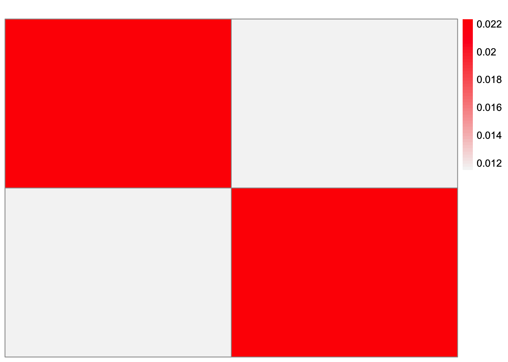

Last updated: 2024-05-29
Checks: 7 0
Knit directory: EBCD_GBCD_comparison/
This reproducible R Markdown analysis was created with workflowr (version 1.7.1). The Checks tab describes the reproducibility checks that were applied when the results were created. The Past versions tab lists the development history.
Great! Since the R Markdown file has been committed to the Git repository, you know the exact version of the code that produced these results.
Great job! The global environment was empty. Objects defined in the global environment can affect the analysis in your R Markdown file in unknown ways. For reproduciblity it’s best to always run the code in an empty environment.
The command set.seed(20240229) was run prior to running
the code in the R Markdown file. Setting a seed ensures that any results
that rely on randomness, e.g. subsampling or permutations, are
reproducible.
Great job! Recording the operating system, R version, and package versions is critical for reproducibility.
Nice! There were no cached chunks for this analysis, so you can be confident that you successfully produced the results during this run.
Great job! Using relative paths to the files within your workflowr project makes it easier to run your code on other machines.
Great! You are using Git for version control. Tracking code development and connecting the code version to the results is critical for reproducibility.
The results in this page were generated with repository version 685ea55. See the Past versions tab to see a history of the changes made to the R Markdown and HTML files.
Note that you need to be careful to ensure that all relevant files for
the analysis have been committed to Git prior to generating the results
(you can use wflow_publish or
wflow_git_commit). workflowr only checks the R Markdown
file, but you know if there are other scripts or data files that it
depends on. Below is the status of the Git repository when the results
were generated:
Ignored files:
Ignored: .DS_Store
Ignored: .Rhistory
Ignored: code/.DS_Store
Ignored: data/.DS_Store
Note that any generated files, e.g. HTML, png, CSS, etc., are not included in this status report because it is ok for generated content to have uncommitted changes.
These are the previous versions of the repository in which changes were
made to the R Markdown
(analysis/ridgeless-regression-comparison.Rmd) and HTML
(docs/ridgeless-regression-comparison.html) files. If
you’ve configured a remote Git repository (see
?wflow_git_remote), click on the hyperlinks in the table
below to view the files as they were in that past version.
| File | Version | Author | Date | Message |
|---|---|---|---|---|
| Rmd | 685ea55 | Annie Xie | 2024-05-29 | Add ridgeless regression comparison |
The motivation for this analysis comes from a question that Jingshu asked during Joon’s dissertation defense. Joon was discussing the drift factorization which involves fitting an orthogonal matrix factorization to the matrix \(P\) where \(P\) is \(n \times p\) and \(p < n\). So we want to fit the following: \[ P = ZL^{T}. \]
where \(Z\) is \(n \times k\) and \(L\) is \(p \times k\). We want \(Z\) to represent orthogonal sources of change, e.g. branches of a tree. It is possible that \(k > p\). Jingshu asked whether in this setting, the solution for \(Z\) is identifiable. It definitely is not in the case without the constraint. So alternate question to think about is does the orthogonal constraint make the solution identifiable?
After further thought, we do not think it is identifiable. But then comes the question, how are we fitting \(Z\)?
The fact that EBCD was able to find an estimate in this over-specified setting was surprising to me. GBCD struggled to find an estimate in this case, and I wonder if it is because GBCD prefers to find a low rank approximation rather than an over-specified one.
Matthew hypothesizes that the Polar.U function is
performing something comparable to ridgeless regression.
To explain the potential connection between ridgeless regression and the estimation of \(Z\), we first consider the regression formulation of the matrix factorization problem. In this section, I consider the EBMF formulation of matrix factorization, which is \(X = LF^{T}\). Consider fixing \(L\) and wanting to estimate \(Z\). Then we can think of the matrix factorization problem as fitting \(p\) regressions of the following form: \[\begin{bmatrix} x_{1l}\\ x_{2l}\\ \dots\\ x_{nl} \end{bmatrix} = l_1 \cdot f_{l1} + l_2 \cdot f_{l2} + \dots + l_k \cdot f_{lk}\]
If the columns of \(L\) are linearly independent, then the solution for \(F\) would be \((L^{T}L)^{-1}L^{T}X\). However, if the columns of \(L\) are linearly dependent, then this regression problem does not have a unique solution because \(L^{T}L\) is not invertible. One way to get a solution though is to consider ridge regression. In ridge regression, the solution has the form \((L^{T}L + \lambda I)^{-1}L^{T}X\).
Ridgeless regression describes what happens when you take \(\lambda \to 0\). One might expect that it would be equivalent to using no penalty at all. However, that is not true. The solution for ridgeless regression is the the minimum L2 norm solution among all the possible options that minimize the fit term.
In this analysis, I attempt to compare the two methods and see if
that is, in fact, what the Polar.U function is doing in
this setting.
library(ggplot2)
library(cowplot)
library(RColorBrewer)
library(ggrepel)
library(pheatmap)
library(gridExtra)
#library(Seurat)
library(Matrix)
library(ebnm)
library(flashier)
library(magrittr)
library(ashr)
library(irlba)
library(reshape2)
library(patchwork)
Attaching package: 'patchwork'The following object is masked from 'package:cowplot':
align_plotslibrary(fastTopics)
#source("~/Documents/PhD 3/Research/EBCD/gbcd-workflow/code/fit_cov_ebnmf.R")plot_heatmap <- function(L, title = "", colors_range = c("gray96", "red")){
### define the color map
cols <- colorRampPalette(colors_range)(49)
brks <- seq(min(L), max(L), length=50)
plt <- pheatmap(L, show_rownames = FALSE, show_colnames = FALSE, cluster_rows = FALSE, cluster_cols = FALSE, color = cols, breaks = brks, main = title)
return(plt)
}source("~/Documents/PhD 3/Research/EBCD/ebcd_functions.R")We also will generate a block structured factor matrix \(Z\), which is \(90 \times 3\). Our data will have the form \[X = ZL^{T} + E\] \[E_{ij} \overset{i.i.d.}{\sim} N(0, 1/\tau)\]
generate_normal_data <- function(noise_sd){
### simulate L
LL <- matrix(0, nrow=2, ncol=3)
LL[,1] <- 1
LL[1, 2] <- 1
LL[2, 3] <- 1
### simulate F
FF <- matrix(0, nrow=90, ncol = 3)
FF[1:30,1] <- rnorm(30, mean = 0, sd = 1)
FF[31:60,2] <- rnorm(30, mean = 0, sd = 1)
FF[61:90,3] <- rnorm(30, mean = 0, sd = 1)
FF <- t(t(FF)/apply(FF,2, function(x){return(sqrt(sum(x^2)))}))
### generate normal noise
E <- matrix(rnorm(90*2, mean = 0, sd = noise_sd), ncol = 2)
### save the simulated data
data <- list(Y = FF %*% t(LL) + E, LL = LL, FF = FF)
return(data)
}set.seed(2052)
data_norm <- generate_normal_data(0.01)dim(data_norm$Y)[1] 90 2These are some visualizations of the simulated data. This is a heatmap of the loadings matrix.
plot_heatmap(data_norm$LL)This is a heatmap of the factor matrix.
plot_heatmap(data_norm$FF, colors_range = c('blue','red'))This is a heatmap of \(F^{T}F\). This is to check that it is orthogonal.
plot_heatmap(t(data_norm$FF) %*% data_norm$FF)observed.vals <- t(data_norm$Y) %*% data_norm$Y/ncol(t(data_norm$Y))This is a heatmap of the Gram matrix.
plot_heatmap(observed.vals)
The EBCD algorithm updates \(Z\) with the following update: \[\hat{Z} = Polar.U(XL).\] Using the true loadings matrix (and of course, the data), we compute the estimate for \(Z\).
Z.est <- PolarU(data_norm$Y%*%data_norm$LL)plot_heatmap(Z.est, colors_range = c('blue','red'))To implement ridgeless regression, we implement ridge regression with a very small penalty, \(\epsilon\). Recall that for fixed \(L\), we can estimate \(Z\) through regression problems. In this formulation, the regression problem is \[\begin{bmatrix} x_{l1} & x_{l2} & \dots x_{lp} \end{bmatrix}^{T} = l_1 \cdot z_{l1} + \dots + l_k \cdot z_{lk}\]
ridge_estimate_Z <- function(x_j, L, epsilon){
fit <- glmnet::glmnet(L, x_j, alpha = 0, intercept = FALSE)
z_est <- as.matrix(coef(fit, s = epsilon))[c(-1),]
names(z_est) <- NULL
return(z_est)
}Z_ridge_est <- t(apply(data_norm$Y, 1, ridge_estimate_Z, L = data_norm$LL, epsilon = 10^(-10)))plot_heatmap(Z_ridge_est, colors_range = c('blue','red'))Comparing the two estimates, it does not appear that the Polar.U function is doing something comparable to ridgeless regression. In particular, the ridgeless regression estimate is a lot more sparse than that of the Polar.U function. Also, the ridgeless regression estimate is rank 2 and not rank 3 – the first column of the estimate is all zero.
During a recent discussion with Matthew, he told me that he no longer thinks that the Polar.U function is similar to ridgeless regression. Instead, he hypothesizes that EBCD may be getting stuck in a non-sparse solution. In particular, EBCD may be encouraged (via its iterative nature?) to find compact solutions where it only uses a subset of the allotted vectors to explain the sources of variation. Then it arbitrarily chooses other vectors that are orthogonal to the first subset to fill in the rest. In addition, if the learned prior is non-sparse, then it may be difficult for EBCD to get out of the non-sparse solution space.
sessionInfo()R version 4.3.2 (2023-10-31)
Platform: aarch64-apple-darwin20 (64-bit)
Running under: macOS Sonoma 14.4.1
Matrix products: default
BLAS: /Library/Frameworks/R.framework/Versions/4.3-arm64/Resources/lib/libRblas.0.dylib
LAPACK: /Library/Frameworks/R.framework/Versions/4.3-arm64/Resources/lib/libRlapack.dylib; LAPACK version 3.11.0
locale:
[1] en_US.UTF-8/en_US.UTF-8/en_US.UTF-8/C/en_US.UTF-8/en_US.UTF-8
time zone: America/Chicago
tzcode source: internal
attached base packages:
[1] stats graphics grDevices utils datasets methods base
other attached packages:
[1] fastTopics_0.6-142 patchwork_1.2.0 reshape2_1.4.4 irlba_2.3.5.1
[5] ashr_2.2-66 magrittr_2.0.3 flashier_1.0.53 ebnm_1.1-27
[9] Matrix_1.6-5 gridExtra_2.3 pheatmap_1.0.12 ggrepel_0.9.5
[13] RColorBrewer_1.1-3 cowplot_1.1.3 ggplot2_3.5.1 workflowr_1.7.1
loaded via a namespace (and not attached):
[1] pbapply_1.7-2 rlang_1.1.3 git2r_0.33.0
[4] horseshoe_0.2.0 compiler_4.3.2 getPass_0.2-4
[7] callr_3.7.6 vctrs_0.6.5 quantreg_5.97
[10] quadprog_1.5-8 stringr_1.5.1 shape_1.4.6.1
[13] pkgconfig_2.0.3 crayon_1.5.2 fastmap_1.2.0
[16] mcmc_0.9-8 utf8_1.2.4 promises_1.3.0
[19] rmarkdown_2.27 ps_1.7.6 MatrixModels_0.5-3
[22] purrr_1.0.2 glmnet_4.1-8 xfun_0.44
[25] cachem_1.1.0 trust_0.1-8 jsonlite_1.8.8
[28] progress_1.2.3 highr_0.11 later_1.3.2
[31] parallel_4.3.2 prettyunits_1.2.0 R6_2.5.1
[34] bslib_0.7.0 stringi_1.8.4 SQUAREM_2021.1
[37] jquerylib_0.1.4 iterators_1.0.14 Rcpp_1.0.12
[40] knitr_1.45 httpuv_1.6.15 splines_4.3.2
[43] tidyselect_1.2.1 rstudioapi_0.16.0 yaml_2.3.8
[46] codetools_0.2-20 processx_3.8.4 plyr_1.8.9
[49] lattice_0.22-6 tibble_3.2.1 withr_3.0.0
[52] coda_0.19-4.1 evaluate_0.23 Rtsne_0.17
[55] survival_3.6-4 RcppParallel_5.1.7 pillar_1.9.0
[58] whisker_0.4.1 foreach_1.5.2 plotly_4.10.4
[61] softImpute_1.4-1 generics_0.1.3 rprojroot_2.0.4
[64] invgamma_1.1 truncnorm_1.0-9 hms_1.1.3
[67] munsell_0.5.1 scales_1.3.0 glue_1.7.0
[70] scatterplot3d_0.3-44 lazyeval_0.2.2 tools_4.3.2
[73] data.table_1.15.4 SparseM_1.81 fs_1.6.4
[76] grid_4.3.2 tidyr_1.3.1 MCMCpack_1.7-0
[79] colorspace_2.1-0 deconvolveR_1.2-1 cli_3.6.2
[82] Polychrome_1.5.1 fansi_1.0.6 mixsqp_0.3-54
[85] viridisLite_0.4.2 dplyr_1.1.4 uwot_0.1.16
[88] gtable_0.3.5 sass_0.4.9 digest_0.6.35
[91] htmlwidgets_1.6.4 htmltools_0.5.8.1 lifecycle_1.0.4
[94] httr_1.4.7 MASS_7.3-60.0.1